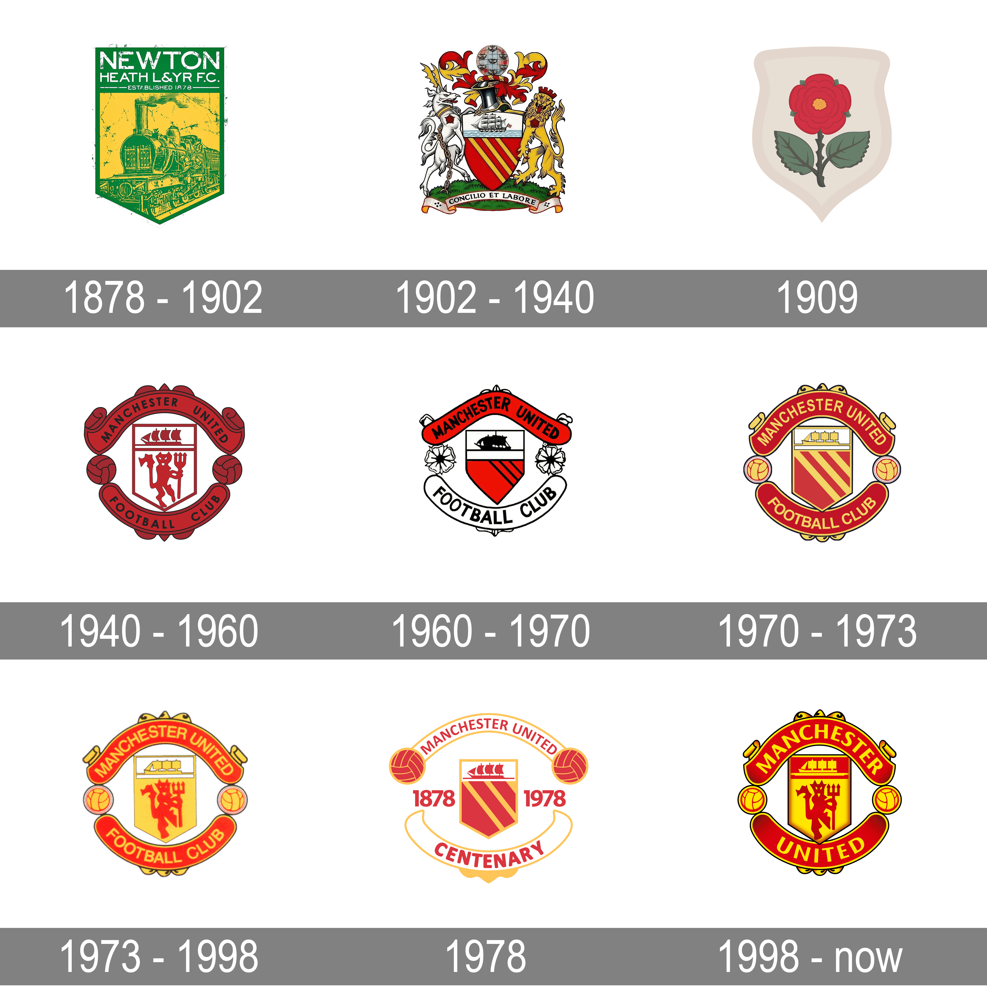

Early years(1878-1945)
Manchester United was formed in 1878 as Newton Heath LYR Football Club by the Carriage and Wagon department of the Lancashire and Yorkshire Railway (LYR) depot at Newton Heath. The team initially played games against other departments and railway companies, but on 20 November 1880, they competed in their first recorded match; wearing the colours of the railway company – green and gold – they were defeated 6–0 by Bolton Wanderers' reserve team. By 1888, the club had become a founding member of The Combination,

In January 1902, with debts of £2,670 – equivalent to £310,000 in 2023[nb 1] – the club was served with a winding-up order.Captain Harry Stafford found four local businessmen, including John Henry Davies (who became club president), each willing to invest £500 in return for a direct interest in running the club and who subsequently changed the name; on 24 April 1902, Manchester United was officially born.[nb 2] Under Ernest Mangnall, who assumed managerial duties in 1903, the team finished as Second Division runners-up in 1906 and secured promotion to the First Division, which they won in 1908 – the club's first league title. The following season began with victory in the first ever Charity Shield and ended with the club's first FA Cup title. Manchester United won the First Division for the second time in 1911, but at the end of the following season, Mangnall left the club to join Manchester City. In 1922, three years after the resumption of football following the First World War, the club was relegated to the Second Division, where it remained until regaining promotion in 1925. Relegated again in 1931, Manchester United became a yo-yo club, achieving its all-time lowest position of 20th place in the Second Division in 1934. Following the death of principal benefactor John Henry Davies in October 1927, the club's finances deteriorated to the extent that Manchester United would likely have gone bankrupt had it not been for James W. Gibson, who, in December 1931, invested £2,000 and assumed control of the club. In the 1938–39 season, the last year of football before the Second World War, the club finished 14th in the First Division.
Busby years(1945-1969)
In October 1945, the impending resumption of football after the war led to the managerial appointment of Matt Busby, who demanded an unprecedented level of control over team selection, player transfers and training sessions. Busby led the team to second-place league finishes in 1947, 1948 and 1949, and to FA Cup victory in 1948. In 1952, the club won the First Division, its first league title for 41 years. They then won back-to-back league titles in 1956 and 1957; the squad, who had an average age of 22, were nicknamed "the Busby Babes" by the media, a testament to Busby's faith in his youth players.In 1957, Manchester United became the first English team to compete in the European Cup, despite objections from The Football League, who had denied Chelsea the same opportunity the previous season. En route to the semi-final, which they lost to Real Madrid, the team recorded a 10–0 victory over Belgian champions Anderlecht, which remains the club's biggest victory on record.
The following season, on the way home from a European Cup quarter-final victory against Red Star Belgrade, the aircraft carrying the Manchester United players, officials and journalists crashed while attempting to take off after refuelling in Munich, Germany. The Munich air disaster of 6 February 1958 claimed 23 lives, including those of eight players – Geoff Bent, Roger Byrne, Eddie Colman, Duncan Edwards, Mark Jones, David Pegg, Tommy Taylor and Billy Whelan – and injured several more.
Assistant manager Jimmy Murphy took over as manager while Busby recovered from his injuries and the club's makeshift side reached the FA Cup final, which they lost to Bolton Wanderers. In recognition of the team's tragedy, UEFA invited the club to compete in the 1958–59 European Cup alongside eventual League champions Wolverhampton Wanderers. Despite approval from The Football Association, The Football League determined that the club should not enter the competition, since it had not qualified. Busby rebuilt the team through the 1960s by signing players such as Denis Law and Pat Crerand, who combined with the next generation of youth players – including George Best – to win the FA Cup in 1963. The following season, they finished second in the league, then won the title in 1965 and 1967. In 1968, Manchester United became the first English club to win the European Cup, beating Benfica 4–1 in the final with a team that contained three European Footballers of the Year: Bobby Charlton, Denis Law and George Best. They then represented Europe in the 1968 Intercontinental Cup against Estudiantes de La Plata of Argentina, but defeat in the first leg in Buenos Aires meant a 1–1 draw at Old Trafford three weeks later was not enough to claim the title. Busby resigned as manager in 1969 before being replaced by the reserve team coach, former Manchester United player Wilf McGuinness.
1969-1986
Following an eighth-place finish in the 1969–70 season and a poor start to the 1970–71 season, Busby was persuaded to temporarily resume managerial duties, and McGuinness returned to his position as reserve
Ferguson years(1986-2013)
Alex Ferguson and his assistant Archie Knox arrived from Aberdeen on the day of Atkinson's dismissal, and guided the club to an 11th-place finish in the league. Despite a second-place finish in 1987–88, the club was back in 11th place the following season. Reportedly on the verge of being dismissed, Ferguson's job was saved by victory over Crystal Palace in the 1990 FA Cup final.The following season, Manchester United claimed their first UEFA Cup Winners' Cup title. That triumph allowed the club to compete in the European Super Cup for the first time, where United beat European Cup holders Red Star Belgrade 1–0 at Old Trafford. The club appeared in two consecutive League Cup finals in 1991 and 1992, beating Nottingham Forest 1–0 in the second to win that competition for the first time as well. In 1993, in the first season of the newly founded Premier League, the club won their first league title since 1967, and a year later, for the first time since 1957, they won a second consecutive title – alongside the FA Cup – to complete the first "Double" in the club's history. United then became the first English club to do the Double twice when they won both competitions again in 1995–96, before retaining the league title once more in 1996–97 with a game to spare.
In the 1998–99 season, Manchester United became the first team to win the Premier League, FA Cup and UEFA Champions League – "The Treble" – in the same season. Trailing 1–0 going into injury time in the 1999 UEFA Champions League final, Teddy Sheringham and Ole Gunnar Solskjær scored late goals to claim a dramatic victory over Bayern Munich, in what is considered one of the greatest comebacks of all time. That summer, Ferguson received a knighthood for his services to football. In November 1999, the club became the only British team to ever win the Intercontinental Cup with a 1–0 victory over the strong 1999 Copa Libertadores winners Palmeiras in Tokyo. The Red Devils counted on an unexpected goalkeeper fail by future 2002 FIFA World Cup winner Marcos and a disallowed goal scored by Alex to win the game.
Manchester United won the league again in the 1999–2000 and 2000–01 seasons, becoming only the fourth club to win the English title three times in a row. The team finished third in 2001–02, before regaining the title in 2002–03. They won the 2003–04 FA Cup, beating Millwall 3–0 in the final at the Millennium Stadium in Cardiff to lift the trophy for a record 11th time. In the 2005–06 season, Manchester United failed to qualify for the knockout phase of the UEFA Champions League for the first time in over a decade, but recovered to secure a second-place league finish and victory over Wigan Athletic in the 2006 Football League Cup final. The club regained the Premier League title in the 2006–07 season, before completing the European double in 2007–08 with a 6–5 penalty shoot-out victory over Chelsea in the 2008 UEFA Champions League final in Moscow to go with their 17th English league title. Ryan Giggs made a record 759th appearance for the club in that game, overtaking previous record holder Bobby Charlton. In December 2008, the club became the first British team to win the FIFA Club World Cup and followed this with the 2008–09 Football League Cup, and its third successive Premier League title. That summer, forward Cristiano Ronaldo was sold to Real Madrid for a world record £80 million. In 2010, Manchester United defeated Aston Villa 2–1 at Wembley to retain the League Cup, its first successful defence of a knockout cup competition. After finishing as runners-up to Chelsea in the 2009–10 season, United achieved a record 19th league title in 2010–11, securing the championship with a 1–1 away draw against Blackburn Rovers on 14 May 2011.This was extended to 20 league titles in 2012–13, securing the championship with a 3–0 home win against Aston Villa on 22 April 2013.
2013-present
On 8 May 2013, Ferguson announced that he was to retire as manager at the end of the football season, but would remain at the club as a director and club ambassador. He retired as the most decorated manager in football history.The club announced the next day that Everton manager David Moyes would replace him from 1 July, having signed a six-year contract. Ryan Giggs took over as interim player-manager 10 months later, on 22 April 2014, when Moyes was sacked after a poor season in which the club failed to defend their Premier League title and failed to qualify for the UEFA Champions League for the first time since 1995–96. They also failed to qualify for the UEFA Europa League, the first time Manchester United had not qualified for a European competition since 1990. On 19 May 2014, it was confirmed that Louis van Gaal would replace Moyes as Manchester United manager on a three-year deal, with Giggs as his assistant.Malcolm Glazer, the patriarch of the family that owns the club, died on 28 May 2014.
Manchester United Logo Changes
